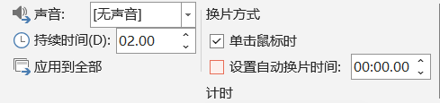

切换
Transition
- 也叫换片
- 设置幻灯片的过渡 Transition 效果、时长和方式
- 可以选择多个幻灯片同时设置过渡效果
- 过渡效果 Effect
- 系统提供细微、华丽和动态内容等多种过渡效果
- 1. 平滑 Morph
- 可以实现图形、数字、文字之间的丝滑过渡
- 简单设计即可呈现惊艳效果
- 2. 页面卷曲 Page Curl
- 翻页效果
- 3...
- 过渡时长 Advanced
- 过渡持续的时间 Duration，单位秒
- 过渡方式
- 1. 单击换片；默认过渡方式
- 2. 自动换片：按照设置时间自动过渡；每个幻灯片都可单独设置自己的换过渡时间；更多精细调整，可以通过"放映" → "排练计时"设置幻灯片的过渡
-
 幻灯片过渡 -
Tips一个PPT中不要使用太多种过渡效果